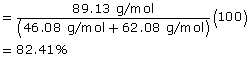
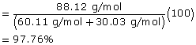

Module 6—Petrochemicals
Atom Economy—One Way to Green Chemical Processes
atom economy: the percentage of material present in reactants that ends up in the desired product for a chemical process
A chemical process’ atom economy is important when trying to green the chemical industry. Atom economy is a percentage of the molecular mass of the product and the reactants used in creating the product. The equation to calculate atom economy is as follows:
In the calculation for atom economy, the reaction’s waste or by-products are not directly counted, but are significant. What is the waste product of an esterification reaction? How does the molecular mass of the waste product of an esterification compare to the molecular mass of other organic reactions; for example, a substitution reaction? Does the difference in the molecular mass of the by-products of these two reactions result in a significant difference in the atom economy when these two types of reactions are compared?
Consider the following worked example that calculates the atom economy for the production of methyl salicylate.
 Self-Check
Self-Check
SC 3. Calculate the atom economy for the esters made using the alcohols and carboxylic acids shown in the following table:
Reaction |
Alcohol |
Carboxylic Acid |
Ester |
|---|---|---|---|
1 |
ethanol |
ethanoic acid |
ethyl ethanoate |
2 |
propan-1-ol |
methanoic acid |
propyl methanoate |
Self-Check Answers
Contact your teacher if your answers vary significantly from the answers provided here.
SC 3.
Reaction |
Alcohol |
Carboxylic Acid |
Ester |
|---|---|---|---|
1 |
ethanol (C2H6O) |
ethanoic acid (C2H6O2) |
ethyl ethanoate (C4H9O2) |
Molecular Mass |
46.08 g/mol |
62.08 g/mol |
89.13 g/mol |
Atom Economy |
 |
||
2 |
propan-1-ol (C2H6O) |
methanoic acid (CH2O2) |
propyl methanoate (C4H8O2) |
Molecular Mass |
60.11 g/mol |
30.03 g/mol |
88.12 g/mol |
Atom Economy |
 |
||